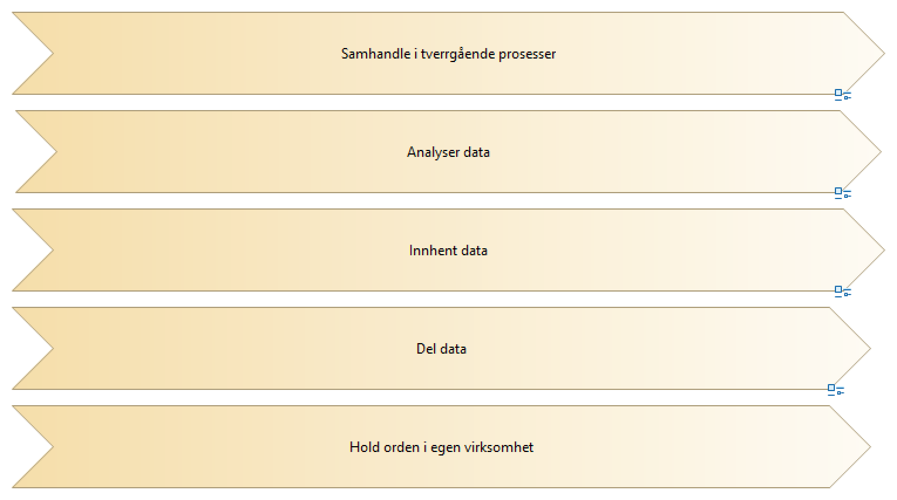

Sammenhengende tjenester - Overordnede verdistrømmer
(
)

difi:language
no
difi:name_no
Overordnet verdistrøm (copy)
difi:name_en
difi:description_no
difi:description_en
difi:docViewPath
Del data
Innhent data
Analyser data
Samhandle i tverrgående prosesser
Hold orden i egen virksomhet
Overordnet verdistrøm - analyser data
Overordnet verdistrøm - Samhandle i tverrgående prosesser
Overordnet verdistrøm - innhent og del data
Overordnet verdistrøm - innhent og del data